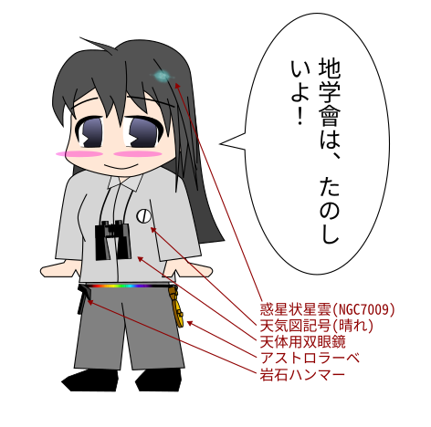

| トップ | 地学會について | つくったもの | お問い合わせ | ||||||
|
|||||||||

松本深志高校地学會のホームページです。

 地学會とは？
地学會とは？
松本深志高校地学會は、地学分野を広く扱う自然科学系の部活動です。
なにをするところ？
詳しくは、「地学會について」をご覧ください
 現況
現況
・2026年4月第4週の平日のどこかで、流星/彗星観測会を行います！
アカウントリスト
地学會とは
松本深志高校地学會は、地学分野を広く扱う自然科学系の部活動です。
天文/気象/地球/地質/鉱物/岩石/宇宙工学 など非常に幅広い分野が対象です。深志高校の科学系部活でもっとも担当範囲が広いと言えます。
分野が広い分、活動がとても自由です。兼部する部員も多い傾向にあります。
特徴
地学會公式マスコットキャラクター「ゴンザレス」

マスコットキャラではないが、たまに姿を見せる
「地学会員Aちゃん(通称)」
部費はありませんが、三年生への贈り物のため例年一人数百円程度の集金をしています。
詳しい活動については、毎年発行している部誌をご覧ください。つくったものにデジタル版があります。
学年を問わず、いつでも新入部員を募集しています！
活動内容
地学會での活動は、基本的には任意参加です！
| 活動場所： | 本校2棟4階地学教室 |
| 基本活動日： | 毎週 火曜・木曜 |
全体で行っている活動
・ 小旅行 ・・・ 日帰りで旅行をします。旅行先は地質系から宇宙工学系と、例年さまざまです。
・ 流星群観測会 ・・・ 流星群がある時期に、学校に泊まり込みをして観測をします。記録用紙を用いた眼視観測を主に行っています。電波観測の機材もあります。
・ 黒点観測 ・・・ 当番制で、毎日太陽黒点のスケッチを昼休みに行います。
・ とんぼ祭 ・・・ とんぼ祭に向けて、プラネタリウムの練習や部誌の執筆などを行います。
個人で行っている活動(例)
・ いろんな研究 ・・・ 地学系の幅広い分野での研究があります。部誌だけでなく、ポスターセッションなどで発表することもあります。深志高校の「探求活動」とテーマを等しくしている人も見られます。
・ 天体の観望・観測 ・・・ 地学會の機材を使って、部活を延長して観望・観測を行うこともあります。彗星や月食などの天文現象を対象とすることが多いです。
・ 資料の整理 ・・・ 地学會に眠っている膨大な資料(標本や観測記録など)を整理する人もいます。当時の雰囲気が感じられるものもあり、けっこう楽しいですよ！貴重な資料もあり、整理は学術的にも価値があります。資料整理は偉業。
機材
地学會にはたくさんの高価な機材があります！
・ タカハシ FCT-150 ・・・ 三枚玉フローライトの15cm屈折。地学會最大の、「主砲」です。
・ タカハシ FSQ-106 ・・・ 四枚玉フローライトの11cm屈折。かなり光学性能がいいらしいです。センサを撮り付けてよく使います
・ タカハシ EM500 Temma500 ・・・ 非常にしっかりとした赤道儀です。固定されているので、極軸もブレません。Temma500は謎です。
・ タカハシ 計算機 ・・・ Windows98が入っています。BITRANのCCDを動かすときに使います。ステライメージ3とか過去の資料があります…CRTモニタのリフレッシュレートが低すぎて見にくい
・ 計算機2 ・・・ こっちはちょっと新しめで、WindowsXPが入っています！ステライメージ3とステラナビゲータ ver.8があります。自動導入にも使えるみたいです。
・ 計算機3 ・・・ これにはなんとWindows10が入っています。電波観測用のソフトと、ZWOのASI系カメラを動かすソフトが入っています。
・ Vixen SD81S ・・・ 運びやすい上に80cmの集光力を得られるので重宝しています。小島よしおのサイン付きです
・ Vixen A62SS ・・・ 超コンパクト鏡筒です。「写真用」って感じですかね…あんまり使っている部員は見ません
・ MEADE DS-115 ・・・ 24年度卒の先輩から寄贈いただきました。主鏡の状態がよろしくなく、メンテナンスが必要そうです。
赤道儀(持ち出し可)
・ Vixen SX2 ・・・ これを持ち帰るのはオススメしません！という重さです。松本駅まで持っていくので大仕事ですよ…ただそれだけあって安定感はあります。なお、電源ケーブル紛失中につき、電動駆動ができません！
・ Vixen AP-WL ・・・ 軽い！といっても鏡筒よりずっと重いですが、これならそこそこ気軽に運べます。この赤道儀とSD81Sの組はなかなか優秀だと思います。乾電池でも動くのが素晴しい
三脚(持ち出し可)
・ Vixen SCG-HAL130 ・・・ そこそこ重いです。SX2を使わない限り出番はないかな…
・ Vixen APP-TL130 ・・・ 軽くていいです！AP-WLにちょうどいい感じです
その他 FUKASIS
・ Vixen XPスポットファインダー ・・・ いわゆる「レーザーサイト」です。調光もできて便利なんですが、すぐズレるのでちょっと使いづらいです(使いかたの問題？)。集光・拡大機能はないので、導入に慣れた人にはあんまり役に立たないかも
・ 自作 地学會可視光低分散分光器「FUKASIS」 ・・・ 分解能R~600の、ちょっと特殊な自作分光器です。詳しくはここ
・ 五藤光学 7×50 7.1° ・・・ 天体用として非常にバランスがよく光学性能も申し分ない、素晴しい双眼鏡です。天体を探すのに便利です
・ タカハシ 10×70 ・・・ デカいです。とても携帯できる重さではありません。いろんなところがガタついています。しかし、双眼鏡としての性能は保たれていて、高倍率が欲しいときに使ったりします。
・ Nikon PROSTAFF P7 8×42 ・・・ たぶんけっこういいやつです。とにかく使うときのストレスが少なくて非常に快適です。観望に適しているかもしれません
接眼鏡 集合写真
・ タカハシ LEシリーズ ・・・ コンパクトな接眼鏡です。アイポイントが高くてシャープでクリアで、さすがお高い接眼鏡という感じです。
・ タカハシ LG5mm ・・・ 十字のスケールがついています。用途は分かりません…
・ Vixen SLV4mm, 15mm ・・・ LEと比べると大きいです。目をおおうカバーをくり出すことができ、とても快適な眼視体験ができます。光学性能もかなり良さそうに見えます
・ Scopetech Ke25mm ・・・ 分光器「FUKASIS」のコリメータ用の接眼鏡です。スリーブを外すと視野環が露出し、焦点面にアクセスできます。周辺像は普通な感じです
イメージセンサ BJ-30L C10-4M ASI678MC
・ BITRAN BJ-30L ・・・ 冷却モノクロCCDです。2000年付近にこれで銀河など撮影していたようです。昔は松本も空が暗かったんだなぁ
・ Vixen C10-4M ・・・ 非冷却のカラーCCDです。ビデオ撮影ができます。掩蔽などの観測に便利そうです
・ ZWO ASI678MC ・・・ 非冷却のカラーCMOSです。天体写真を撮るのに使えます。FCT-150(FL=1050mm)に直焦点するとかなり視野が狭くなります。惑星とかに使うんですかね…？ちなみにFL=2.5mmの魚眼レンズ(ねじ込み式)がついていて、それを使うと対角魚眼になりほぼ全天を撮影できます
ソフトウェア
・ ステライメージ3 ・・・ もうずいぶん前のですが…いまならフリーソフトで代用できるのではとは薄々思っています
・ ステラナビゲータ ver.5
・ ステラナビゲータ ver.8 ・・・ 自動導入をするときに使います。が、2026年現在自動導入がうまくいかないという問題に直面していて、正直にいうと使っていません…
since 2026-04-15
================
Copyright © 2026 松本深志高等学校地学會